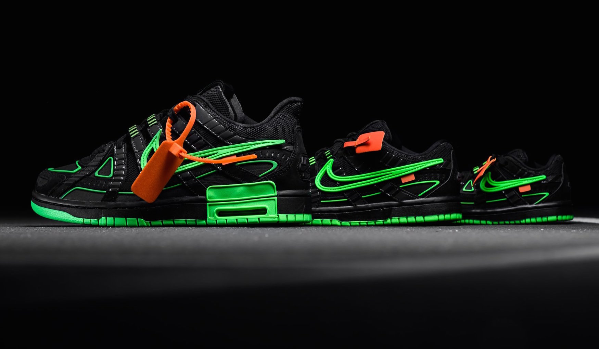

Welcome to my Shoe Website
. Take a look at my collection and start shopping now!
Shop NowMy Shoes
-

Jordan 4 Retro Red Thunder
Following similar color blocking as the Air Jordan 4 Thunder, the Air Jordan 4 Red Thunder features an all-black Durabuck upper with red netted underlays and eyelets. On the tongue, a signature Air Jordan Flight patch is stitched. A vibrant red midsole and Jumpman heel tab complete the retro design. 1
Buy Now! -

AIR JORDAN 5 RETRO 'TOP 3'
The Air Jordan 5 Retro 'Top 3' is a hybrid look that combines three OG colorways. The shoe's 'Black/Metallic Silver' influence becomes apparent on the black nubuck construction of the upper, with silver on the quarter panel netting. A Fire Red '23' accents the heel, joining the midsole in drawing from the 'Fire Red.' The two-tone tongue instead takes its cue from the 'Grape' colorway.
Buy Now! -

YEEZY DESERT BOOT 'OIL'
The Yeezy Desert Boot 'Oil' adds a boot construction to Kanye West's signature line. Borrowing the suede toe box and oval overlays from the Yeezy 500, the shoe's three-quarter cut upper is built with a mix of smooth suede and mesh, finished tonally in Oil. Thick rope laces support the fit, as does the exaggerated mudguard. Underfoot, a bulky foam midsole provides cushioning, giving way to a rugged outsole for traction.
Buy Now! -

OFF-WHITE X AIR RUBBER DUNK 'GREEN STRIKE'
The Off-White x Air Rubber Dunk 'Green Strike' released as part of a collaboration with Virgil Abloh's luxury streetwear brand. Updating the classic silhouette, the shoe's upper features the layered design of the P-6000. Finished in black and Green Strike, the upper is highlighted by orange on the hang-tag. 'Nike Off' emerges on the tongue tag, while 'Shoelaces' marks the shoelaces. Underfoot, the midsole includes visible Air in the heel for cushioning.
Buy Now!